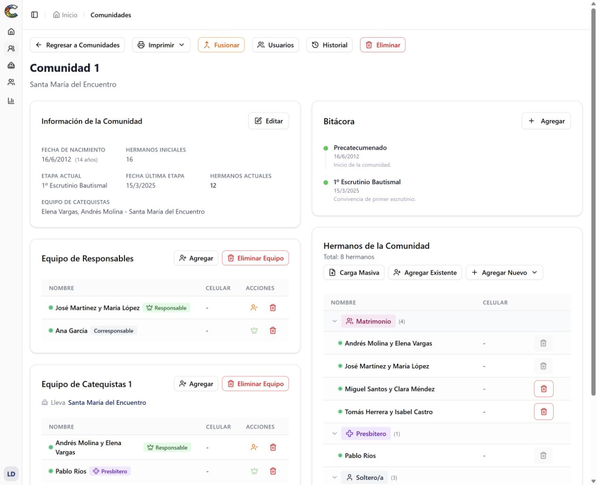
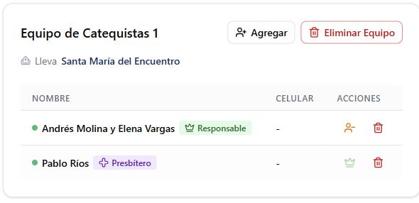
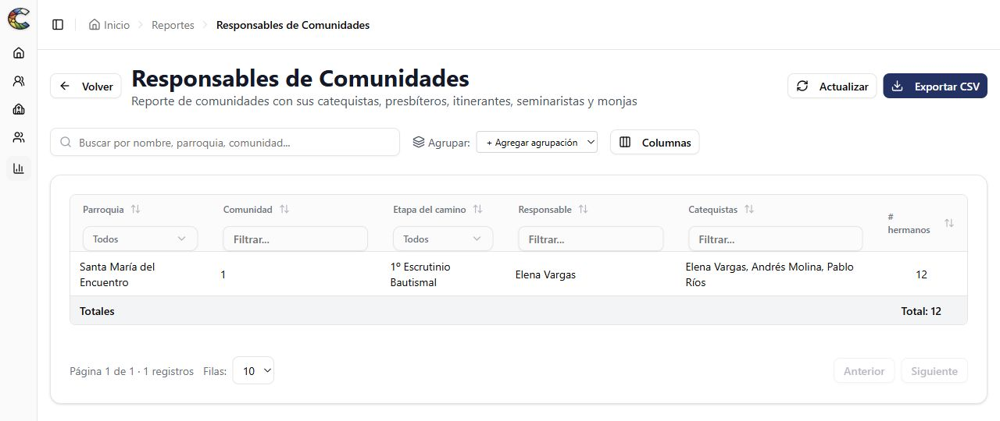

Communities and members
See who belongs to each community and keep member details, married couples and vocations organized.
HERE TO SERVE YOUR COMMUNITY
More clarity in your daily work.
More time for your community.
Bring together information about Neocatechumenal Way members, parishes and teams in one simple, free tool.

Built for those who serve their community
LESS SCATTERED INFORMATION. MORE CLARITY.
A shared view of your information to make everyday tasks easier.
See who belongs to each community and keep member details, married couples and vocations organized.
Connect communities to their parishes and dioceses. Find information by city and area.
Find community leaders and catechists, and follow the stages of each community’s journey.
Bring together the information you need and prepare printable community records.
A LOOK INSIDE
See who supports each community and bring the information you need into your reports.

Community leaders and catechists connected to the communities they support.
Enlarge screenshot of the catechist team (opens in a new tab)
Review community information, filter the details and prepare for your meetings.
Enlarge screenshot of the communities report (opens in a new tab)Real screenshots of the Spanish-language app in a demo environment. All people, the parish and the community are fictional.
A SIMPLE START
No downloads or installation needed. Just an internet connection and your account.
Create a free accountSign up with your name, email address and a password.
Open the link sent to your email to confirm your account.
An administrator needs to grant you access. You can then view or manage information according to your role.
BEFORE YOU BEGIN
The essentials for taking the next step.
Yes. The web app is free to use. You can create an account and use the features available to your assigned role and permissions.
No. All you need is a browser and an internet connection. You can open the app on a computer, tablet or phone.
This website is available in English and Spanish. The app and its screens are currently in Spanish.
For community leaders, catechists and anyone helping organize information for Neocatechumenal Way communities.
You must sign in to use the app. The information you can view and the actions you can take depend on your role and assigned access. Creating an account does not automatically grant access to a community.
If your account shows “Sin acceso asignado” (no access assigned), contact the administrator coordinating ComunidadCat in your community or parish to request the appropriate permissions.
TECHNOLOGY IN SERVICE OF COMMUNITY
A free tool to support the work
of those who serve their communities.